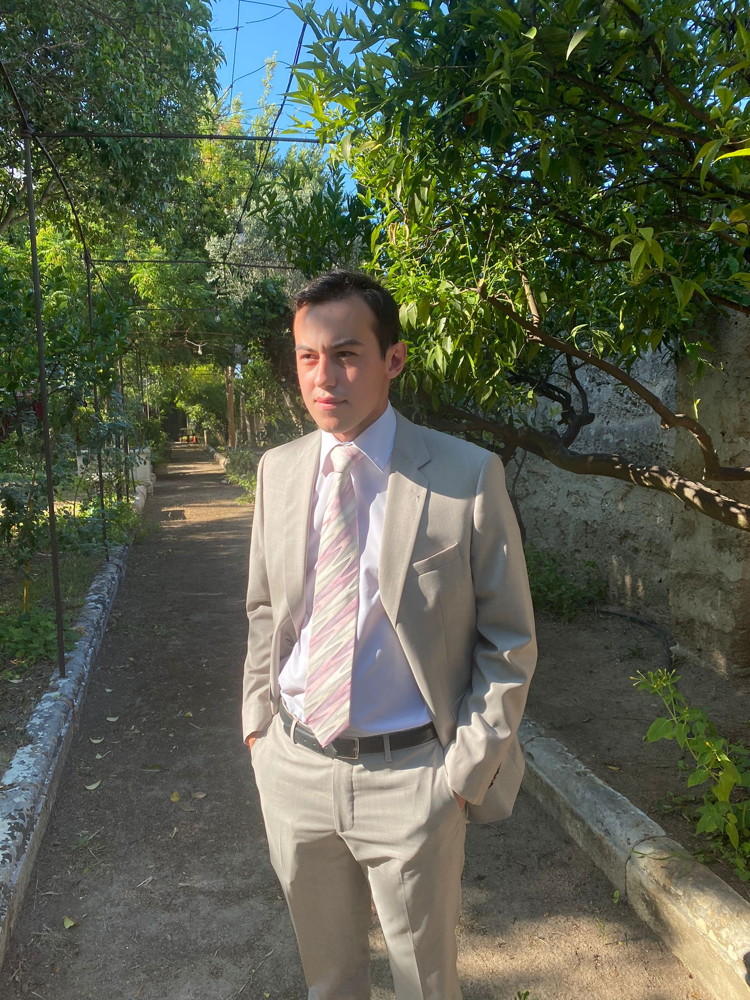
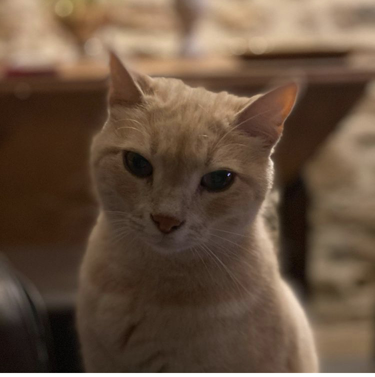
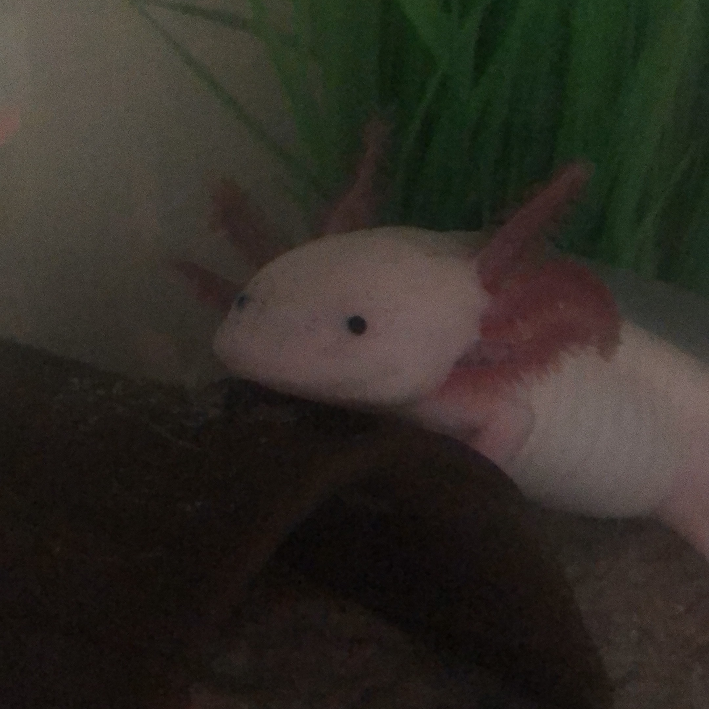
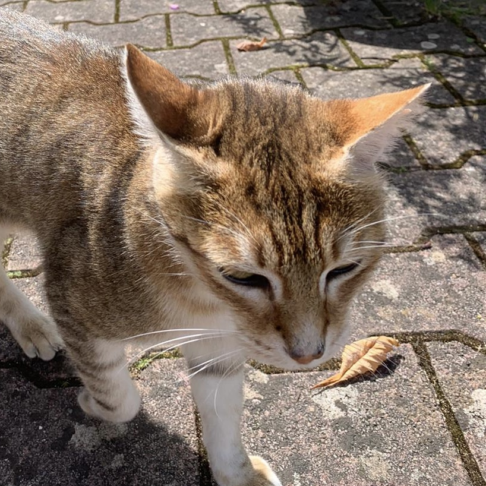
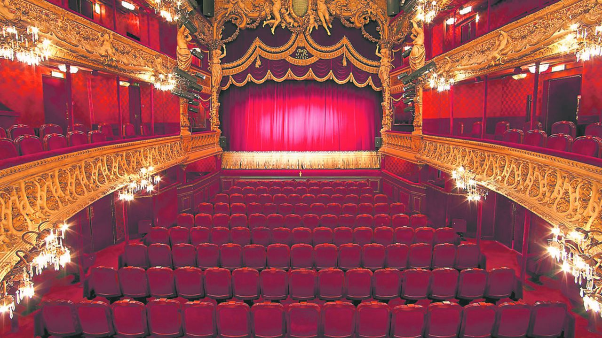
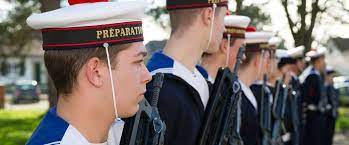
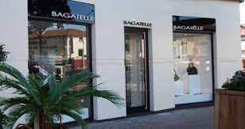
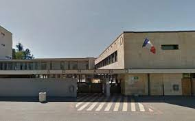

Aurélien Cosi
Bonjour je m'appel Aurélien Cosi j'ai 19 ans je suis a l'ESDES depuis 2ans. J'habite a Chasselay et j'ai 2 chats et 1 axololt
  Mes passions
La politique
De même que la vie s'impose à nous, la politique s'impose à la vie en société. Une fois qu'on est plongé dedans, soit on subit, soit on essaie de comprendre ce qui se passe. Apprendre et comprendre sont souvent des plaisirs en soi, cela peut donc générer un plaisir, dans une certaine mesure ; toutefois, ce n'est pas dans la politique que l'on aura les plus grands plaisirs. La politique participe de la perception de notre monde et de l'environnement ; elle façonne des concepts qui influence notre façon de voir, pour le meilleur comme pour le pire. Le but est donc de décortiquer tout ça pour ne plus subir, le piège étant souvent de se croire au dessus ou, au moins, en dehors. L'intérêt pour la politique est en quelque sorte un tout petit sous-ensemble d'une quête plus large de sens et de perception d'une vérité plus complète ; une partie hyper-spécialisée dans la compréhension de la situation tel qu'elle est, avec les données historiques et sociologiques en cours, sans perdre de vue un horizon moins étroit, plus philosophique.
Histoire
Vers l’âge de 10 ans, je commence à me passionner pour l’Histoire. Pendant deux ans, je cire des chaussures pour acheter mon premier livre, intitulé « Notre dynastie ». Et chaque année, pour son anniversaire, j’écris au grand-duc Jean. En février 1989, à 25 ans, je suis le premier journaliste à entrer au château de Colmar-Berg, la résidence de la famille royale luxembourgeoise, pour interviewer le grand-duc. Mon rêve d’enfant se réalise, le héros de mes livres d’Histoire est devant moi. Alors, quand il me demande comment va ma grand-mère, l’émotion me submerge. Avec le recul, je n’ai qu’un regret : avoir fait une école de commerce au lieu d’études en sciences humaines. Pourtant, c’est l’Histoire qui a dirigé toute ma vie. Aujourd’hui, dans ma bibliothèque, il y a 8 000 livres d’Histoire et des biographies de tous les pays et dans toutes les langues. Et ce n’est pas fini !
théatre
Le théâtre est pour moi une passion que j’ai depuis adolescente j’ai toujours aimer jouer la comédie rentrer dans de différents rôles d’une personne euphorique ou d’une ado rebelle a une petit fille le théâtre me permet d’être moins timide et de me sentir comme les autres car j’ai un maladie génétique j’ai beaucoup souffert de ma différence le théâtre ma permis de me prouver et prouver aux monde que malgré le handicap n’est pas un frein a vivre nos rêves j’ai eu de la chance de pouvoir faire du théâtre via des établissements d’aide pour les personne en situation de handicap donc le gem soleil qui m’apporte beaucoup et avec j’ai pu faire une superbe représentations avec des gens en or et au cœur emoorme et un metteuse en scène fabuleuse Fabienne si tu passe par la bisous mais je crois que mon plus cadeaux sa les félicitations qui ma redonner confiance en moi et prouver aux inbeciles que j’ai pu croiser que je suis cap de faire beaucoup de chose et maintenant je leur accorde plus d’importance je vis ma vie comme je l’entends le principal est d’être heureu
Mes experiences
Septembre 2019 à Mars 2020 : Préparation Militaire Marine. Juin à septembre 2019 : fabrication et vente en porte-à-porte de pâtisseries Février 2017 : stage en cabinet d'architectes (Factory Architect) Juin 2021 : stage dans une maroquinerie (Bagatelle)
 Formation
juin 2020 Baccalauréat ES (économique et social) Lycée Louis Armand Villefranche-sur-Saône Août 2020 Etudiante et Déléguée de Classe à l'ESDES Business School (UCLY), programme 5 ans grandes écoles
Mes points forts